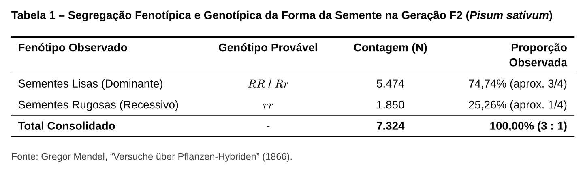
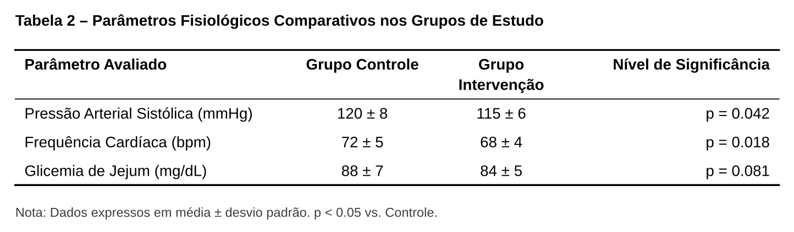

TIPOGRAFIA ACADÊMICA ABNT / APA
Motor table — Tabelas Acadêmicas
O motor table converte dados em formato CSV ou texto tabular em tabelas acadêmicas com padrão tipográfico rigoroso. Ele aplica automaticamente as três réguas horizontais obrigatórias (topo, cabeçalho e base), alinhamento de texto por coluna e notas institucionais de rodapé, sem permitir grades verticais.
⚙️ Diretivas de Configuração (%%)
| Diretiva | Sinônimos | Tipo | Descrição |
|---|---|---|---|
caption |
title, titulo |
String | Título editorial posicionado acima da tabela no PDF e no preview. |
note |
fonte, source |
String | Nota de rodapé ou fonte bibliográfica posicionada abaixo da régua inferior. |
align |
- | String | Alinhamento das colunas: l (esquerda), c (centro), r (direita). Ex: l, c, r ou llr. |
columns |
colunas |
String | Larguras fracionárias ou fixas Typst. Ex: 2fr, 1fr, 80pt ou auto, 1fr. |
layout.width |
width |
String | Largura total da tabela na mancha do papel (padrão: 100%). |
src |
file |
String | Caminho para arquivo CSV anexo para carregar os dados brutos. |
🧪 Exemplos Práticos
1. Tabela Básica com Alinhamento por Coluna e Nota de Rodapé
Markdown (table)
Resultado da Renderização

```table
%% caption="Segregação Fenotípica e Genotípica da Forma da Semente na Geração F2 (Pisum sativum)"
%% align=l, c, c, r
%% note="Fonte: Gregor Mendel, Versuche über Pflanzen-Hybriden (1866)."
Fenótipo Observado, Genótipo Provável, Contagem (N), Proporção Observada
Sementes Lisas (Dominante), $R R$ / $R r$, 5474, 74.74% (aprox. 3/4)
Sementes Rugosas (Recessivo), $r r$, 1850, 25.26% (aprox. 1/4)
Total Consolidado, -, 7324, 100.00% (3 : 1)
```2. Tabela com Larguras Proporcionais de Coluna
Markdown (table com columns)
Resultado da Renderização

```table
%% caption="Parâmetros Fisiológicos Comparativos nos Grupos de Estudo"
%% columns=2fr, 1fr, 1fr, 1.5fr
%% align=l, c, c, r
%% layout.width=95%
%% note="Dados expressos em média ± desvio padrão. p < 0.05 vs. Controle."
Parâmetro Avaliado, Grupo Controle, Grupo Intervenção, Nível de Significância
Pressão Arterial Sistólica (mmHg), 120 ± 8, 115 ± 6, p = 0.042
Frequência Cardíaca (bpm), 72 ± 5, 68 ± 4, p = 0.018
Glicemia de Jejum (mg/dL), 88 ± 7, 84 ± 5, p = 0.081
```